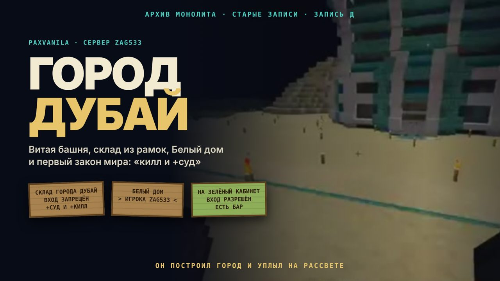

PaxVanila: Город Дубай
Полная расшифровка «Записи Д» из Старых записей. Город у Песчаного моря, каким его снял ZAG533
Страж-7 включал эту плёнку чаще остальных. Два часа без единой драки. «В Хронике фронта ZAG533 жжёт деревни. А здесь он вешает таблички, чтобы люди не заблудились. Это один и тот же человек. Я хочу, чтобы вы видели обе записи».
Что это за запись
- Длина: около двух часов. Это прямой эфир. В углу экрана всю запись бегут подношения зрителей: по 2, 3, 4, 5 рублей, а один раз сразу 12 евро. Страж-7 называет их «медью из эфира»: люди смотрели, как строится город, и платили за это, хотя ничего не могли взять в руки.
- Мир: это Мир Песчаного города, один из пяти миров «Старых записей». На карте PaxVanila он лежит за южной границей. Ключ генератора у него свой, но строит в нём тот же человек: запись начинается с экрана выбора миров, а первая строка в чате «ZAG533 joined the game».
- Голоса почти нет. Строитель молчит. Где-то в середине издалека слышно, как кто-то зовёт его по имени. Всё, что мы знаем о городе, написано на его табличках.
- Мир сам себя сохраняет. Чат то и дело пишет: «Игра сохранена» и «Время ожидания бездействия игрока составляет 10 минут». Город жил по часам: кто стоял без дела десять минут, того мир выкидывал.
Где стоит город
Дубай стоит на берегу моря, посреди огромной пустыни. На карте из записи видно, как это выглядит сверху:
- Жёлтый материк Песчаного моря занимает почти всю карту.
- Зелёный лес лежит к северу и западу. Через него текут извилистые реки.
- Синее море врезается в пустыню большим заливом. Вдоль берега у города идёт ровная гребёнка: причалы, по одному на каждый квартал.
- Острова. В заливе лежат песчаные острова, на одном из них виден знак, похожий на крест.
- Зелёные метки на карте стоят там, где жили люди. Красная метка у причалов это сам строитель.
«Они построили город там, где нет ни дерева, ни травы. Всё дерево привезли по морю. Поэтому у них причал у каждого квартала», Страж-7.
Кварталы города
1. Витая башня
Первое, что видно в записи, это ночная пустыня и башня, закрученная спиралью. Её этажи сложены из призмарина и белого кварца, и каждый следующий этаж чуть повёрнут относительно нижнего. Издалека кажется, что башня медленно вращается.
От башни через песок идут две прямые линии: дорога из призмарина и ряд факелов. По ним ночью находят город с моря.
Рядом с башней стоит фиолетовый портал. Куда он ведёт, запись не показывает.
2. Пирамида
Чуть в стороне от башни стоит пирамида из песчаника со ступенями и входом посередине. Над её вершиной висит фонарь. Пирамида старше города: её ступени выветрены, а башню строят прямо у неё под боком, будто нарочно.
Страж-7 думает, что строитель нашёл пирамиду в пустыне и решил ставить город рядом с ней. «Старые стены сами подсказывают, где жить».
3. Склад Города
Самое большое здание записи. Над дверью висит табличка, которую ZAG533 пишет прямо в эфире, по букве:
СКЛАД ГОРОДА ДУБАЙ ВХОД ЗАПРЕЩЁН +СУД И +КИЛЛ
Внутри склад устроен так, как не был устроен ни один склад до него:
- Стена из рамок. От пола до потолка висят рамки, и в каждой лежит образец: изумруд, золото, железо, лазурит, кварц, глина, порох, кирпич, морковь, кожа. Под каждой рамкой стоит свой сундук. Не надо открывать сто сундуков, чтобы найти железо: посмотри на стену.
- Пол в два синих цвета. Тёмно-синий и бирюзовый бетон выложены квадратами, как плитка во дворце.
- Белый столп посреди зала, а на нём стойка. Это место для того, что город ценит больше всего.
- Шалкеры. По залу расставлены оранжевые ящики-шалкеры. Это переносные сундуки: их можно унести с собой целиком.
4. Синий зал и кабинеты
За складом начинается внутренняя часть здания, где люди не хранят вещи, а живут и работают:
- Стены из тёмного бетона, пол в синих квадратах.
- Светильники на белых шестах, из морских фонарей. Свет в синем зале холодный, как под водой.
- Диваны из призмариновых ступенек. На них можно сесть, и чат честно пишет: «You are now sitting». Это первый город, где для людей сделали места, чтобы сидеть.
- Стеклянные перегородки делят зал на кабинеты. Двери в кабинеты из берёзы и тёмного дуба, у каждой своя.
- Карта на столе. В одном кабинете на полу и на столе выложена та самая большая карта из десятков листов. С неё ZAG533 планировал город.
5. Зелёный кабинет
На одной из дверей висит табличка, единственная добрая во всём городе:
НА ЗЕЛЁНЫЙ КАБИНЕТ ВХОД РАЗРЕШЁН ВХОД ЕСТЬ БАР
Сюда пускали всех. Страж-7 говорит, что это и был настоящий центр города: не склад и не Белый дом, а бар, куда можно прийти без приглашения.
6. Фермы и Личный кабинет
Над другой дверью висят две таблички рядом:
ВХОД НА СКЛАД. ПОСТОРОННИМ КИЛЛ И +СУД
ВХОД НА ФЕРМЫ И ЛИЧНЫЙ КАБИНЕТ. ПОСТОРОННИМ КИЛЛ И +СУД
За ними, под землёй, спрятаны фермы:
- Зал из песчаника и каменного кирпича с плиткой из красного и серого кирпича на полу, светокаменными лампами и верстаком посередине.
- Машинный зал. Вдоль стены идут поршни и рельсы с красной пылью. Ферма работает сама.
- Рычаг с табличкой «выкл/вкл ферма тыкв». Ферму тыкв можно остановить одним движением руки.
7. Белый дом
Ближе к концу записи ZAG533 ставит над дверью башни новую табличку:
БЕЛЫЙ ДОМ > ИГРОКА ZAG533 <
Это его собственный дом, и он стоит прямо над Складом Города. Хозяин города живёт над городскими запасами. Страж-7 говорит об этом без осуждения: «Он не прятал, где живёт. Он подписал свой дом своим именем. Потом, в Хронике, он так же подпишет свою камеру».
8. Обсидиановые комнаты
Почти треть записи ZAG533 проводит под песком. Он долго ломает и ставит обсидиан, кладёт серый цемент и воду, вырезает в песчанике ступени. Получаются глухие чёрные комнаты без окон.
Что это было, запись не говорит. Страж-7 знает три версии:
- Хранилище. Обсидиан нельзя взорвать. Самое ценное прятали туда, куда не дойдёт ни один ТНТ.
- Тюрьма. В «Дне 517» уже была клетка с огнём. Может быть, здесь строили новую.
- Убежище. Если город взорвут, в обсидиане можно переждать.
«Я думаю, это было всё сразу. Город без закона строит стены, которые нельзя сломать. А потом мы придумали закон, и такие стены стали не нужны», Страж-7.
9. Жилой квартал
Ближе к окраине стоит многоэтажный дом из песчаника и досок с рядами окон и крыльцом. Это единственное здание, где не висит ни одной таблички с угрозой. Здесь просто жили.
Закон «Килл и Суд»
На трёх табличках из шести написано одно и то же: «посторонним килл и +суд». Это первый записанный закон в истории мира до PaxVanila.
Закон состоял из двух наказаний, и шли они именно в таком порядке:
- Килл. Того, кто зашёл без спроса, убивают на месте.
- +Суд. Потом, уже мёртвого, судят.
Страж-7 смеётся над этим законом, но не очень весело: «Сначала убить, потом судить. Они правда так писали. Мы в PAX переставили слова: сначала суд, потом всё остальное. Это и есть разница между их миром и нашим».
Тяжёлый револьвер
На одном из столбов склада, на постаменте в рамке, лежит необычное оружие. Когда его берут в руку, над экраном загорается надпись «Heavy revolver», тяжёлый револьвер.
Такого оружия нет ни в одной другой записи. Страж-7 считает, что это оружие хозяина города, знак власти, как скипетр. Его не носили в бой: в Хронике фронта ZAG533 воюет мечом и щитом. Его держали на виду, на складе, чтобы все видели.
Где револьвер сейчас, неизвестно.
Последний кадр
Запись кончается не в городе. ZAG533 в алмазной броне садится в лодку и выходит в открытое море на рассвете. Камера смотрит на него сзади, пока город не скрывается за горизонтом. Потом экран гаснет.
Больше записей из Дубая нет. Мир Песчаного города погас, как и остальные четыре. Следующий раз ZAG533 появляется уже в другом мире, в «Дне 517», с каменной деревней и Telorfind, а потом в Хронике фронта и Дальнем секторе.
«Он построил город и уплыл. Я не знаю почему. Может быть, город стал ему тесен. Может быть, он поплыл искать новую деревню. Через год он её нашёл, и там уже был Telorfind», Страж-7.
Хронология Дубая
| Когда | Что случилось |
|---|---|
| До города | В пустыне стоит древняя пирамида. Рядом никто не живёт |
| Основание | ZAG533 ставит рядом с пирамидой Витую башню и прокладывает дорогу факелов к морю |
| Первые годы | Склад Города со стеной из рамок. Синий зал, кабинеты, диваны |
| Расцвет | Карта мира из десятков листов на столе. Причалы у каждого квартала. Фермы с рельсами и рычаг фермы тыкв |
| Закон | Над дверями появляются таблички «посторонним килл и +суд» |
| Белый дом | ZAG533 подписывает башню своим именем |
| Обсидиан | Под песком строят глухие обсидиановые комнаты |
| Уход | ZAG533 на рассвете уплывает на лодке. Запись обрывается |
| Потом | Мир Песчаного города гаснет. ZAG533 в другом мире: «День 517», каменная деревня, Telorfind. Затем Хроника фронта |
Что из этого вынес PAX
| Что было в Дубае | Что стало в PaxVanila |
|---|---|
| Стена из рамок над сундуками | Рынок и склад в каждой столице: товар видно, не открывая сундук |
| Причал у каждого квартала | Порты (датапак Ports) и морская торговля |
| «Килл и +суд» | Закон PAX наоборот: сначала суд, потом наказание. Убийство без войны считается преступлением |
| Обсидиановые комнаты от ТНТ | Закон «анти-руины»: город нельзя снести в ноль, поэтому прятаться в обсидиан не нужно |
| Зелёный кабинет с баром | Нейтральные места, куда пускают всех: Башня на 0, 0 |
| Белый дом над складом | Казна державы хранится отдельно от дома правителя |
| Тяжёлый револьвер на постаменте | Реликвии державы, которые показывают, но не носят в бой |
Зацепки для сервера и мода
Это идеи, а не готовые механики. Их можно взять в PaxVanila или в HOI4-мод.
Для Minecraft: - Ивент «Песчаное море». Когда граница мира вырастет, где-то в пустыне можно поставить руины Витой башни и пирамиды. Внутри лежит табличка «Склад Города Дубай» и пустой постамент. - Реликвия «Тяжёлый револьвер». Предмет для системы Арканум. Не наносит урона в бою, но держава, у которой он лежит в столице, получает бонус к репутации. - Фокус наследия «Дубай». Для народа, который выберет пустыню: бонус к торговле через порт и скидка на склад с рамками.
Для HOI4: - Идея «Килл и Суд». +стабильность, −поддержка войны у соседей, +скорость подавления сопротивления. Убирается решением «Сначала суд». - Решение «Белый дом». Перенести столицу в город с портом в пустыне.
Открытые загадки
- Фиолетовый портал у башни. Куда он вёл?
- Знак-крест на острове на карте. Это клад, могила или просто ошибка рисовальщика?
- Обсидиановые комнаты. Хранилище, тюрьма или убежище?
- Тяжёлый револьвер. Где он сейчас?
- Почему ZAG533 уплыл и бросил город, который строил так долго?
«Город Дубай стоял на песке. Песок не держит ничего долго. Но таблички на дверях я помню наизусть: склад, фермы, Белый дом и зелёный кабинет, где есть бар. Если когда-нибудь найдёте их в пустыне, зайдите сначала в зелёный». Страж-7
Источник: запись «МАЙНчленер_Строем город» (около 2 ч). Таблички, чат и постройки взяты из записи. Названия кварталов, хронология, версии про обсидиан и все слова Стража-7 придуманы для лора.